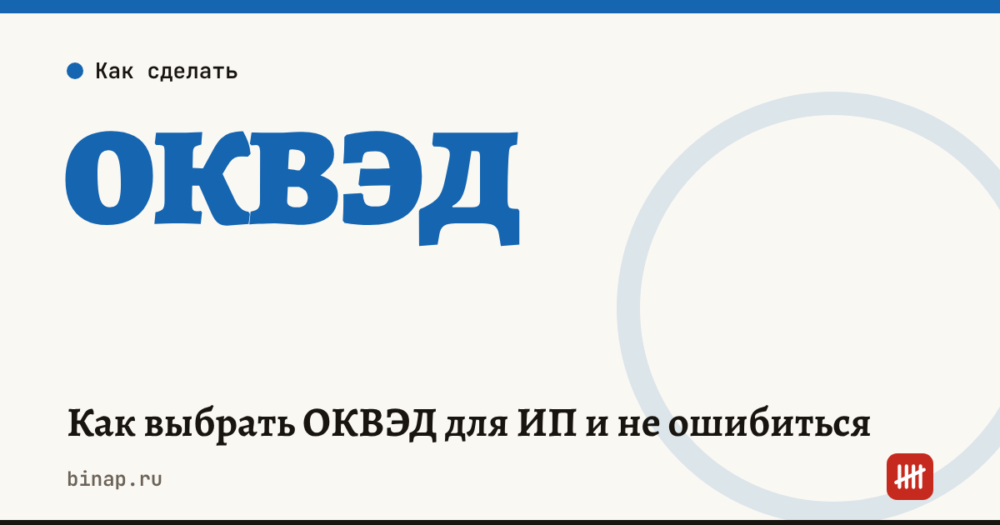

Как выбрать ОКВЭД для ИП и не ошибиться

Код ОКВЭД показывает государству и банкам, чем занимается ИП. При регистрации выбирают один основной код — по главному источнику дохода — и сколько угодно дополнительных под то, что планируете делать. Основной код важнее остальных: от него зависят право на патент и некоторые льготы, условия господдержки и кредитов, а у работодателей — тариф взносов на травматизм.
Коротко
- Коды берут из классификатора ОКВЭД2: четыре знака и больше, например 47.91 — торговля через интернет.
- Основной код — один, по главному источнику дохода; дополнительных можно указать много.
- Коды можно добавить или поменять позже, заявлением в налоговую, без госпошлины.
- От основного кода зависят доступ к программам поддержки и кредитам, а у ИП с работниками — тариф взносов на травматизм.
- Работать по виду деятельности, которого нет в выписке, — риск вопросов от банка и налоговой; проще сразу добавить нужные коды.
Сроки, изменения и разборы для ИП и самозанятых — каждое утро в Telegram и MAX. Подпишитесь, чтобы не пропустить.
На что влияет основной код
| Где важен | Как влияет |
|---|---|
| Господдержка и кредиты | программы и поручительства часто доступны только для определённых кодов; например, по данным блога банка на «Клерке», для зонтичного поручительства не подходит основной код 47 (розничная торговля) |
| Пониженные тарифы взносов | для части отраслей льготы привязаны к основному коду и доле дохода по нему |
| Взносы на травматизм у работодателя | тариф зависит от класса риска по основному виду деятельности |
| Банк | счёт и операции банк сверяет с заявленными видами деятельности |
Как подобрать коды
- Опишите словами, чем будете заниматься: что продаёте или какие услуги оказываете, кому и как.
- Найдите коды в классификаторе ОКВЭД2 по ключевым словам. Выбирайте коды из четырёх знаков и больше: так точнее описан вид деятельности.
- Основной код — по тому, что принесёт больше всего дохода.
- Дополнительные коды — под всё, что реально планируете: продажи на маркетплейсах, доставку, обучение, аренду.
- Проверьте ограничения: есть ли под ваш вид деятельности патент или нужна лицензия.
Пример (условный). Мастер маникюра, который ещё продаёт материалы через маркетплейс:
| Код | Что означает | Роль |
|---|---|---|
| 96.02 | услуги парикмахерских и салонов красоты | основной |
| 47.91 | торговля через интернет | дополнительный |
| 85.41 | дополнительное образование (если будут курсы) | дополнительный |
Перед регистрацией сверьте названия кодов с актуальной редакцией классификатора.
Зарегистрировать ИП онлайн и сразу открыть счёт: ссылка
Как поменять или добавить коды
ИП подаёт в налоговую заявление об изменении сведений в ЕГРИП — онлайн через сайт ФНС или Госуслуги. Госпошлина за это не нужна. Когда изменения внесут, проверьте выписку из ЕГРИП.
Если основной вид деятельности изменился — например, доход теперь в основном от торговли, а не от услуг, — поменяйте основной код, чтобы не потерять льготы и не получить вопросы банка.
Что сделать
- Закажите выписку ЕГРИП на сайте ФНС и посмотрите свои коды.
- Сравните их с тем, чем вы реально занимаетесь и планируете заниматься в ближайший год.
- Добавьте недостающие коды заявлением — до того, как начнёте новый вид деятельности.
Как открыть ИП — пошагово онлайн. ИП или ООО — сравнение на цифрах. Сколько стоит регистрация — пошлина, подпись, счёт и касса.
Частые вопросы
Сколько кодов можно указать? Основной — один, дополнительных — сколько нужно. Но не стоит добавлять десятки кодов «на всякий случай»: банку это может показаться подозрительным.
Платят ли пошлину за изменение кодов? Нет, изменение сведений об ИП в ЕГРИП госпошлиной не облагается.
Что будет, если работать по коду, которого нет в выписке? Сам по себе доход по такому виду деятельности не запрещён, но банк может запросить пояснения, а для патента и некоторых льгот нужен именно нужный код. Проще добавить код заранее.